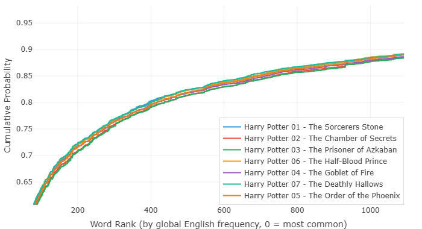

哈利·波特七部曲 — 都是羅琳寫的嗎？
J.K. 羅琳寫了七本哈利·波特。從魔法石到死神的聖物，橫跨十年。故事越來越暗，書越來越厚，讀者的年紀跟著哈利的年級一起漲。
這七本書到底是不是同一個人寫的？這話聽著像廢話——全世界都知道是羅琳寫的。但如果不靠常識，只靠數據呢？把七本書的文字全部扔進分析器，不看作者名，不看標題，只看句子和詞彙的分佈，你能得出「這是同一個人的作品」的結論嗎？
我們跑了這七本書。結果有點意外。
圖一：第一部之後，句子突然變了

先看句子長度的分佈。《魔法石》的曲線跟後面六本判若兩人。
第一部裡，短句佔了壓倒性的比例。曲線緊緊貼著左邊走，上升得很快。十來個詞以內就收住的句子比比皆是。讀起來是輕快的，跳躍的，像一個小男孩第一次推開魔法世界的大門——什麼都是新的，什麼都不需要解釋太久。
從第二部開始，情況變了。句子整體拉長了。從第二部到第七部，六本書的曲線詭異地集中在同一種風格裡，與第一部的輕盈感顯得那麼迥異。
是什麼讓羅琳寫完第一部之後發生了如此劇烈的風格遷移？
一個合理的猜測是：第一部是兒童文學的寫法。短句。快節奏。不拖泥帶水。到了後來，她知道有幾百萬孩子等她。書變厚了。句子變長了。敘述的密度增加了。她不是在偷懶，是在滿足一群已經長大的讀者。
圖二：但這就是羅琳寫的，毫無疑問

如果只看圖一，你可能會懷疑後面幾部是不是換了人。圖二徹底打消了這個念頭。
七條詞頻曲線高度相似。不是「有點像」，是「幾乎就是同一條線上下平移了幾次」。七本書的詞彙分佈，本質上是一套東西。
這件事比看起來要深刻得多。
一個人要模仿另一個人的句子長度，是相對容易的。你想寫得像海明威？好，寫短句就是了。想寫得像福克納？把句子拉長。句長是一種可以刻意控制的東西，甚至不需要太高的文學素養——你就規定自己每句話不超過十五個詞，堅持三頁，你也能得出一條類似海明威的曲線。
但詞頻分佈不行。
你無法刻意控制一篇長文本裡所有單詞出現的頻率。這根本不是一個人類大腦能做到的事情。你寫了十幾萬字，用了上萬次單詞，哪個詞用了多少遍、排在第幾名、跟其他詞的比例關係如何——這些資訊量太大，維度太高，你不可能有意識地去操縱它。別說人，就算是 AI，讓它按某個精確的詞頻分佈去生成一篇小說，它也做不到。AI 能模仿風格，但它模仿不了統計指紋。
所以詞頻曲線就是作者的筆跡鑑定。你可以改句子長短，改不了詞彙的底層分佈。你可以裝成另一個人寫一段話，但裝不了一整本書。
再來仔細看圖二。七條線不只是相似，它們還有一個非常有趣的特徵：每條線都在某個特定的位置有一個整齊的跳變。
說明什麼？說明羅琳對某幾個意象的「偏愛」，七本書從未改變。不管故事怎麼走，不管主角長多大，她總是回頭看那幾個詞。那幾個詞在不同書裡反覆出現，在同一段頻率區間留下同樣的凸起。
那麼，為什麼七條線不是完全重合，而是像一層一層的台階、整體上下平移呢？
從數學上很好理解。我們來假設一下：有一條基礎的詞頻曲線。你寫新書的時候，突然需要反覆提到一個新形象。比方說《混血王子》裡，引入了「混血王子」這個概念——於是「half」這個高頻詞的使用量就被拉高了。「half」排在 COCA 詞頻表比較靠前的位置，它一多，後面所有的詞在累積比例上都被輕微抬高了一點點。整條曲線看起來就「整體上移」了。
換個說法：平移不是因為風格變了，是因為每本書多塞了幾個新人物、新意象。
這對系列小說尤其適用。主線人物不變，核心場景不變，每本書圍繞一個新主題展開——火盃帶來一批競賽詞彙，鳳凰會帶來一批反抗詞彙，混血王子帶來一批身份詞彙。新加進來的東西把曲線輕輕往上頂了一下，但曲線本身的大形態紋絲不動。
所以圖二告訴我們的事，比圖一更根本。句子可以變長，詞彙可以擴容，但那隻握筆的手，從始至終是同一個。
數據說：不用看封面上的署名，這就是羅琳。